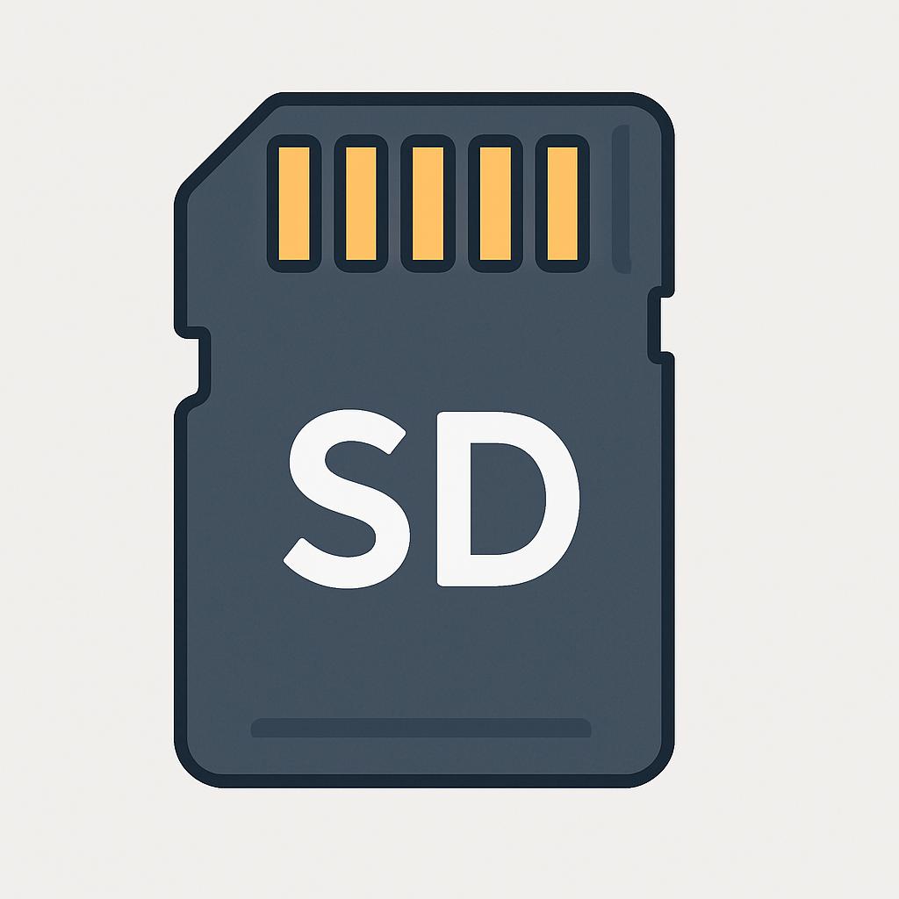
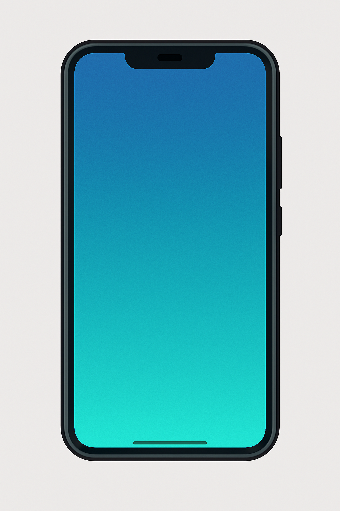
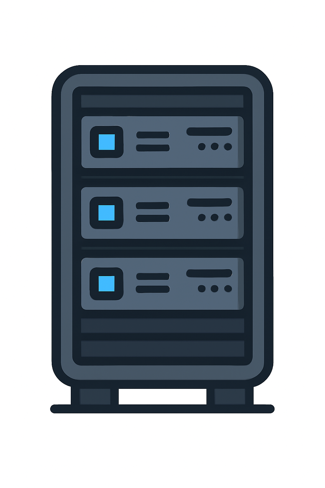
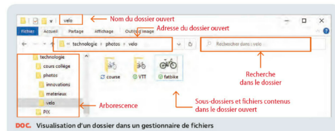

Thématique abordée : Comprendre et gérer des systèmes d’information
Nom :
Attendus de fin de cycle : C1.3 – Décrire le rôle des systèmes d’information dans le partage d’information ; C1.4 – Recenser des données, les identifier, les classer, les représenter, les stocker, les retrouver dans une arborescence.
Prénom :
Compétence détaillée : Comprendre la notion de système d’information et savoir organiser et exploiter des données numériques.
Classe :
Connaissances à mobiliser : définition et rôle des ressources matérielles et logicielles ; arborescence et gestionnaire de fichiers ; unités de stockage et conversions ; extensions de fichiers ; bonnes pratiques de navigation et de cybersécurité.
Compétences du socle commun travaillées : Domaines 1 – Langages pour penser et communiquer ; 2 – Méthodes et outils pour apprendre ; 3 – Formation de la personne et du citoyen ; 4 – Systèmes naturels et techniques ; 5 – Représentations du monde et de l’activité humaine. Détails (Domaine 1, composante 3) : Comprendre et s’exprimer en utilisant les langages mathématiques, scientifiques et informatiques : utiliser les nombres et passer d’une écriture d’un nombre à une autre (écritures décimale et fractionnaire, notation scientifique, pourcentages).
Compétences numériques (CRCN) travaillées : 1 – Information et données ; 2 – Communication et collaboration ; 3 – Création de contenus ; 4 – Protection et sécurité ; 5 – Environnement numérique. Détails : Sauvegarder des fichiers (niveau 2) ; distinguer les différents types d’espaces de stockage (niveau 3) ; stocker et organiser les données (niveau 3–4).
Situation déclenchante
Tu viens d’intégrer le club informatique du collège. Afin d’organiser les projets et de partager les ressources, vous décidez de créer un système d’information : répertoire commun pour les documents, codage d’un petit programme de gestion et mise en place de bonnes pratiques de navigation.
Mes observations
Problème à résoudre
Mes idées pour le résoudre
✏️ Micro‑questions
Parmi ces mots de passe, lesquels sont sûrs ? Justifiez : azerty, Paul2008, M4i$0nBleu3, Kikoolol, 78?GhRt5$Plop
Robustes : M4i$0nBleu3, 78?GhRt5$Plop (longueur + diversité). Les autres sont courts/prédictibles.
Faut‑il réutiliser le même mot de passe pour plusieurs services ? Explique.
Non. Si un site est compromis, tous tes comptes seraient exposés. Utilise un mot de passe unique par service (+ 2FA si possible).
1. Qu’est‑ce qu’un système d’information ?
Un système d’information (SI) regroupe des informations (données scolaires, horaires, notes) et des ressources pour les collecter, les stocker, les traiter et les diffuser. Ces ressources sont matérielles (ordinateurs, serveurs, réseaux) ou logicielles (système d’exploitation, applications, bases de données).
1.a – Classez les éléments suivants
Faites glisser chaque élément dans la bonne catégorie :
Emplois du temps des élèves
Notes et bulletins
Photos de classe
Ordinateur
Serveur
Clé USB
Système d’exploitation
Application ENT
Logiciel de tableur
Informations
Ressources matérielles
Ressources logicielles
1.b – Programme Python
Complétez et commentez ce programme qui simule un système de prêt de livres dans un CDI. Écrivez des commentaires (#) expliquant le rôle de chaque ligne.
Vous pouvez modifier, sauvegarder, copier et exporter le programme directement dans CodeLab Techno. Les compilateurs externes restent facultatifs pour exécuter le code :
🧰 Ressource — Compilateurs Python en ligne (préférés)
⚠️ Évitez de partager des données sensibles dans un éditeur en ligne.
Expliquez quels éléments du programme stockent l’information (dictionnaire, variables) et lesquels la partagent (affichage à l’écran).
Le dictionnaire bibliotheque stocke les informations (titres et quantités). Les variables comme demande contiennent temporairement des données. La fonction emprunter() met à jour le dictionnaire et partage l’information via print().
2. Mesurer et convertir les capacités de stockage
Les données se mesurent en octets (B). Les multiples courants sont : kilooctet (ko) = 1 000 B ; mégaoctet (Mo) = 1 000 ko ; gigaoctet (Go) = 1 000 Mo ; téraoctet (To) = 1 000 Go. Les sous‑multiples (rarement utilisés pour le stockage) sont : millioctet (mo) = 0,001 octet ; micro‑octet (µo) = 10⁻⁶ octet, etc.
2.a – Conversions
Complétez les conversions (écrivez uniquement les valeurs numériques). Les préfixes sont en minuscules pour « kilo ».
500 ko =
Mo
2 Go =
Mo
3 000 Mo =
Go
750 Mo =
Go
1,5 Go =
Mo
5 Mo =
ko
128 Go =
Mo
1 To =
Go
6 000 Mo =
Go
0,75 Go =
Mo
10 Go =
Mo
250 ko =
Mo
12 000 ko =
Mo
3 To =
Go
0,5 Mo =
ko
4 Go =
Mo
7 500 Mo =
Go
0,25 Go =
Mo
2 500 ko =
Mo
0,1 Mo =
ko
2048 ko =
Mo
15 Mo =
ko
256 Mo =
Go
0,02 Go =
Mo
0,005 Mo =
ko
640 ko =
Mo
9 000 Mo =
Go
0,008 Go =
Mo
20 To =
Go
0,03 Mo =
ko
500 ko = 0,5 Mo ; 2 Go = 2000 Mo ; 3000 Mo = 3 Go ; 750 Mo = 0,75 Go ; 1,5 Go = 1500 Mo ; 5 Mo = 5000 ko ; 128 Go = 128 000 Mo ; 1 To = 1000 Go ; 6000 Mo = 6 Go ; 0,75 Go = 750 Mo ; 10 Go = 10 000 Mo ; 250 ko = 0,25 Mo ; 12 000 ko = 12 Mo ; 3 To = 3000 Go ; 0,5 Mo = 500 ko ; 4 Go = 4000 Mo ; 7500 Mo = 7,5 Go ; 0,25 Go = 250 Mo ; 2500 ko = 2,5 Mo ; 0,1 Mo = 100 ko ; 2048 ko ≈ 2,048 Mo ; 15 Mo = 15 000 ko ; 256 Mo = 0,256 Go ; 0,02 Go = 20 Mo ; 0,005 Mo = 5 ko ; 640 ko = 0,64 Mo ; 9000 Mo = 9 Go ; 0,008 Go = 8 Mo ; 20 To = 20 000 Go ; 0,03 Mo = 30 ko.
2.b – Associer préfixes, symboles et facteurs
Associez pour chaque symbole le préfixe et le facteur multiplicatif : glissez le préfixe et le facteur dans les cases correspondantes. L’unité de base (1) est indiquée sur la dernière ligne.
Faites glisser chaque support dans la catégorie qui correspond approximativement à sa capacité.
Clé USB 8 Go
Disque dur externe 1 To
Blu‑ray 50 Go

CD 700 Mo

Carte SD 64 Go

Smartphone 256 Go
Serveur cloud 10 To
Disque dur externe 1 To
Blu‑ray 50 Go
CD 700 Mo
Carte SD 64 Go
Smartphone 256 Go
Serveur cloud 10 To
Mo à moins de 1 Go
1 Go à 100 Go
100 Go à 1 To
Plus de 1 To
• Mo à moins de 1 Go : CD 700 Mo. • 1 Go à 100 Go : Clé USB 8 Go, Blu‑ray 50 Go, Carte SD 64 Go. • 100 Go à 1 To : Smartphone 256 Go. • Plus de 1 To : Disque dur externe 1 To, Serveur cloud 10 To.
2.d – Classer les mémoires volatiles et permanentes
Les mémoires volatiles stockent des données uniquement pendant le fonctionnement de l’ordinateur (elles sont effacées à l’extinction). Les mémoires permanentes conservent les données même hors tension. Associez chaque type de mémoire à la bonne catégorie :
RAM (Random Access Memory – Mémoire vive)
Cache L1/L2/L3
Registres CPU
VRAM (Video RAM – Mémoire vidéo)
SRAM (Static RAM)
DRAM (Dynamic RAM)
Mémoire tampon (Buffer)
Mémoire de pile (Stack)
Mémoire de tas (Heap)
CMOS
Disque dur (HDD – Hard Disk Drive)
SSD (Solid State Drive)
Clé USB (USB flash drive)
Carte SD (Secure Digital)
CD/DVD/Blu‑ray
ROM (Read Only Memory – Mémoire en lecture seule)
EPROM (Erasable Programmable ROM)
EEPROM (Electrically Erasable Programmable ROM)
Mémoire flash (Flash Memory)
Stockage cloud (Cloud storage)
Mémoires volatiles (temporaire)
Mémoires permanentes (persistantes)
Mémoires volatiles : RAM, Cache L1/L2/L3, Registres CPU, VRAM, SRAM, DRAM, Mémoire tampon (Buffer), Mémoire de pile (Stack), Mémoire de tas (Heap), CMOS.
Mémoires permanentes : Disque dur (HDD), SSD, Clé USB, Carte SD, CD/DVD/Blu‑ray, ROM, EPROM, EEPROM, Mémoire flash, Stockage cloud. Traductions des sigles : RAM = Random Access Memory (Mémoire vive) ; ROM = Read Only Memory (Mémoire en lecture seule) ; VRAM = Video RAM (Mémoire vidéo) ; SRAM = Static RAM (mémoire statique) ; DRAM = Dynamic RAM (mémoire dynamique) ; EPROM = Erasable Programmable ROM ; EEPROM = Electrically Erasable Programmable ROM.
✏️ 2.e — La taille d’un fichier (mode jeu)
⏱️ Temps : 30s
⭐ Score : 0/1
🖼️ Métadonnées des images “Capture”
Nom
Dernière modif.
Format
Taille
Dimensions
Résolution
Capture 1
14/10/2024 09h12 (Lun.)
JPEG
620 ko
1024 px
96 ppp
Capture 2
22/01/2025 17h05 (Mer.)
PNG
245 ko
640 px
96 ppp
Capture 3
03/03/2025 21h48 (Lun.)
JPEG
48 ko
200 px
96 ppp
👁️ Voir un corrigé possible
Réponse : 48 ko. La colonne « Taille » donne la taille en mémoire. Les valeurs « px » (pixels) sont des dimensions, et « ppp » une résolution, pas des tailles mémoire.
✏️ 2.f — Le stockage des données (QCM)
⏱️ Temps : 60s
⭐ Score : 0/4
Le stockage informatique est un moyen de garder et préserver des données en sécurité. Il existe plusieurs
sortes d’architectures de stockage. La plus courante est de disposer des serveurs en local, ils sont alors
raccordés directement aux serveurs de production. L’autre solution, avec le développement de la fibre optique,
est de disposer d’un espace de stockage dans le cloud. Le stockage en ligne permet d’accéder à ses données
facilement selon les besoins tout en les rendant partageables et utilisables. Il est possible d’accumuler autant
de données que l’on souhaite en fonction de la volumétrie disponible sur le serveur ou l’abonnement choisi.
Voici une capture d’écran annotée d’un gestionnaire de fichiers :

Associez chaque terme à sa définition en faisant glisser les étiquettes vers les zones appropriées.
Arborescence
3. Classer et retrouver les données
Les fichiers et dossiers sont organisés en arborescence. Un gestionnaire de fichiers permet de créer, déplacer et renommer des dossiers et de retrouver facilement leurs contenus.
Dossier
Sous-dossier
Fichier
Extension
Gestionnaire de fichiers
Permet de naviguer, créer et déplacer des fichiers
Structure organisant les fichiers en branches
Conteneur dans lequel on place des fichiers
Conteneur à l’intérieur d’un autre dossier
Suffixe indiquant le type du fichier
Document ou programme enregistré
Gestionnaire de fichiers → permet de naviguer, créer et déplacer des fichiers ; Arborescence → structure organisant les fichiers en branches ; Dossier → conteneur pour les fichiers ; Sous-dossier → conteneur dans un autre dossier ; Extension → suffixe indiquant le type ; Fichier → document ou programme enregistré.
3.b – Créer une arborescence pour la technologie
Dans votre espace documentaire sur Colibris, créez un dossier racine nommé Technologie cycle 4 – 5ᵉ G4 (remplacez « 5ᵉ G4 » par votre classe). À l’intérieur, créez trois sous‑dossiers pour les domaines :
Les objets et les systèmes techniques : leurs usages et leurs interactions à découvrir et à analyser
Structure, fonctionnement, comportement : des objets et des systèmes techniques à comprendre
Création, conception, réalisation, innovations : des objets à concevoir et à réaliser
Puis, dans chaque sous-dossier, créez des sous-dossiers pour chaque compétence :
C1 – Décrire le rôle des systèmes d’information dans le partage d’information
C2 – Recenser des données, les identifier, les classer, les représenter, les stocker, les retrouver dans une arborescence
C3 – Identifier des règles permettant de sécuriser un environnement numérique (bases de la cybersécurité) et des règles de respect de la propriété intellectuelle
C4 – Appréhender la responsabilité de chacun dans les dérives (cyberviolence, atteinte à la vie privée, aux données personnelles, usurpation d’identité)
C5 – Décrire les liens entre usages et évolutions technologiques des objets et des systèmes techniques
C6 – Identifier et appliquer des règles pour un usage raisonné des objets communicants et des environnements numériques
C7 – Comprendre et expliquer l’impact environnemental des choix techniques
C8 – Identifier les enjeux du développement stratégique du numérique pour la société
C9 – Concevoir, écrire, tester et mettre au point un programme
Décrivez comment vous avez organisé ces dossiers dans l’espace documentaire ainsi que sur l’ordinateur du collège (dossier « Technologie cycle 4 – 5ᵉ G4 »). Astuce : vous pouvez copier et coller les intitulés des dossiers avec Ctrl+C / Ctrl+V pour aller plus vite.
Exemple : Technologie cycle 4 – 5ᵉ G4/Les objets et les systèmes techniques/C1 Décrire role SI ; Technologie cycle 4 – 5ᵉ G4/Structure fonctionnement comportement/C2 Recenser et classer données ; etc. Chaque compétence dispose de son dossier pour stocker les productions correspondantes.
4. Reconnaître le type de fichier et l’outil associé
Chaque fichier possède une extension (suffixe précédé d’un point) qui indique son type. Il existe de nombreuses familles d’extensions : documents (.doc, .odt…), tableurs (.xls, .ods…), présentations (.ppt, .odp…), images (.jpg, .png…), audio (.mp3…), vidéos (.mp4…), archives (.zip…), exécutables (.exe…), programmes (.py, .mblock, .sb3…), fichiers 3D (.stl, .sldprt, .fcstd, .gcode…), fichiers réseau (.pkt, .filius) ou encore fichiers d’aménagement (.sh3d).
4.a – Classez les extensions
Faites glisser chaque extension dans la bonne catégorie :
Certaines extensions peuvent être ouvertes par plusieurs logiciels. Faites correspondre chaque extension aux logiciels compatibles (plusieurs réponses possibles). Vous pouvez déposer une étiquette dans plusieurs zones.
.doc/.docx
.xls/.xlsx
.ppt/.pptx
.odt
.ods
.odp
.csv
.py
.mblock
.sb2/.sb3
.stl
.gcode
.sldprt
.fcstd
.pkt/.filius
.sh3d
.pdf
Suites bureautiques (Microsoft Office, LibreOffice, Google Docs…)
Sur Internet, chaque appareil est identifié par une adresse IP et des informations peuvent être stockées dans des cookies. La navigation privée et les VPN permettent de limiter les traces, mais ne garantissent pas l’anonymat complet.
5.a – Comprendre un bon mot de passe
Le tableau ci-dessous illustre le temps nécessaire pour casser un mot de passe par force brute (approximation). Plus le mot de passe est long et varié en types de caractères, plus il résiste.
Longueur / Composition
Lettres minuscules
Minuscules + majuscules
Minuscules + majuscules + chiffres
+ caractères spéciaux
8 caractères
1 minute
15 minutes
2 heures
8 heures
10 caractères
2 heures
1 jour
3 jours
2 semaines
12 caractères
1 jour
1 semaine
2 semaines
3 mois
15 caractères
1 semaine
2 mois
1 an
10 ans
Quelles sont les caractéristiques d’un bon mot de passe ? Pourquoi utiliser des mots de passe différents pour chaque service ?
Un mot de passe robuste doit être long (au moins 12 caractères), mélanger minuscules, majuscules, chiffres et symboles, ne pas utiliser de mots courants et être unique pour chaque service afin de limiter l’impact d’une fuite de données.
Adresse IP : identifiant attribué à chaque appareil connecté. Cookie : petit fichier stocké par un site pour se souvenir de vos préférences ou vous suivre. Navigation privée : mode qui ne conserve pas l’historique sur l’ordinateur mais qui ne masque pas l’adresse IP. VPN : réseau privé virtuel créant un tunnel chiffré vers un serveur distant pour masquer l’adresse IP et sécuriser les échanges.
5.c – Associer navigateurs et intelligence artificielle
De plus en plus de navigateurs intègrent des assistants basés sur l’IA. Associez chaque navigateur à l’outil correspondant.
Edge
Chrome
Opera
Brave
Firefox
Copilot / ChatGPT‑5
Gemini (Google)
Aria
Leo
Pas d’IA intégrée
Edge → Copilot/ChatGPT‑5 ; Chrome → Gemini ; Opera → Aria ; Brave → Leo ; Firefox → Pas d’IA intégrée.
6. Synthèse de la séance
Rédige une courte synthèse de ce que tu as appris lors de cette séquence (définitions importantes, compétences développées, difficultés rencontrées, etc.).
Questions métacognitives
Réfléchis à ta manière de travailler :
Qu’ai‑je réussi sans aide ? Qu’est‑ce qui m’a demandé le plus d’efforts ?
Quelle stratégie m’a le plus aidé (par exemple : filtrer d’abord puis calculer) ?
Quelles erreurs ai‑je corrigées et comment ?
Comment puis‑je réutiliser ces méthodes dans une autre situation (Pix, autre discipline) ?
Que ferais‑je différemment la prochaine fois pour gagner du temps et être plus efficace ?
Auto‑évaluation (coche)
Je sais différencier informations, ressources matérielles et logicielles dans un SI.
Je sais convertir des unités de stockage et classer des supports selon leur capacité.
Je sais créer une arborescence de dossiers et organiser les fichiers par compétences.
Je sais reconnaître l’extension d’un fichier et associer l’outil adapté.
Je sais créer un mot de passe robuste et définir adresse IP, cookie, navigation privée et VPN.
Je sais associer un navigateur web à son assistant IA.
Je peux transférer ces compétences dans l’outil Pix.